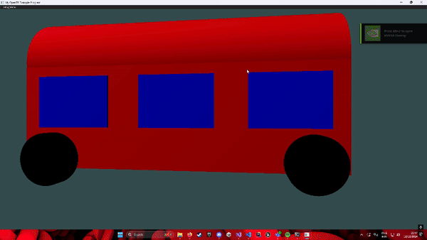

Bus Render
As a part of my final graphics programming assignment, I was tasked to make a simple bus render in OpenGl using a primitive class that consisted of different object primitives, like cylinders, spheres etc. The use of object primitives makes it easier to call different object information at will, without the need of creating the same objects over, thus ultimately not violating the DRY code principle.
Cylinder Object Primitive Code Example
public static Primitive CreateCylinder(Color4 colour)
{
int segments = 50;
float angleOfSegments = 2 * MathF.PI / segments;
float radius = 0.5f;
VertexPositionColour[] vertices = new VertexPositionColour[segments * 15];
int index = 0;
for (int i = 0; i < segments; i++)
{
float angle = i * angleOfSegments;
float angle2 = angle + angleOfSegments;
float x = radius * MathF.Cos(angle);
float y = radius * MathF.Sin(angle);
float x1 = radius * MathF.Cos(angle2);
float y1 = radius * MathF.Sin(angle2);
Vector3 centrePosition = new Vector3(0, 0, radius);
Vector3 topPosition = new Vector3(x, y, radius);
Vector3 bottomPosition = new Vector3(x1, y1, radius);
Vector3 centrePosition1 = new Vector3(0, 0, -radius);
Vector3 topPosition1 = new Vector3(x, y, -radius);
Vector3 bottomPosition1 = new Vector3(x1, y1, -radius);
Vector3 normalTop = new Vector3(x, y, 0).Normalized();
Vector3 normalBottom = new Vector3(x1, y1, 0).Normalized();
Vector3 topCapNormal = new Vector3(0, 0, 1);
Vector3 bottomCapNormal = new Vector3(0, 0, -1);
vertices[index++] = new VertexPositionColour(centrePosition, colour, topCapNormal);
vertices[index++] = new VertexPositionColour(topPosition, colour, topCapNormal);
vertices[index++] = new VertexPositionColour(bottomPosition, colour, topCapNormal);
vertices[index++] = new VertexPositionColour(centrePosition1, colour, bottomCapNormal);
vertices[index++] = new VertexPositionColour(topPosition1, colour, bottomCapNormal);
vertices[index++] = new VertexPositionColour(bottomPosition1, colour, bottomCapNormal);
vertices[index++] = new VertexPositionColour(topPosition, colour, normalTop);
vertices[index++] = new VertexPositionColour(bottomPosition, colour, normalBottom);
vertices[index++] = new VertexPositionColour(topPosition1, colour, normalTop);
vertices[index++] = new VertexPositionColour(topPosition1, colour, normalTop);
vertices[index++] = new VertexPositionColour(bottomPosition, colour, normalBottom);
vertices[index++] = new VertexPositionColour(bottomPosition1, colour, normalBottom);
}
return new Primitive(vertices);
}
The code block above is a cylinder object primitive example. This essentially has all the necessary data needed to create a 3D cylinder object. It first creates 2 circles, that consist of 50 segments each (could be lowered to increase game performance). From there, the two circles are connected using quads, finally creating a cylinder. This is then called to create an object in the clip space. Calling this multiple times will output multiple cylinders (depending on how the array buffer is setup).
A bus class was then created which stored all the bus data, ranging from array buffers, to the scenegraph (where all drawings would go). Each object of the bus had its own method, in which was linked to one singular parent class, my Draw method. In there, all Matrix4 transformation structs were stored, giving the ability of object manipulation. Moreover, the method also consist of all method class for each object. Here is the code block example.
Bus Draw Method Code Example
public void Draw(Shader shader)
{
shader.Use();
Matrix4 model = Matrix4.CreateScale(pScale) *
Matrix4.CreateRotationX(MathHelper.DegreesToRadians(pRotation.X)) *
Matrix4.CreateRotationY(MathHelper.DegreesToRadians(pRotation.Y)) *
Matrix4.CreateRotationZ(MathHelper.DegreesToRadians(pRotation.Z)) *
Matrix4.CreateTranslation(pPosition);
shader.SetMatrix4("uModel", model);
shader.SetVector3("uColour", new OpenTK.Mathematics.Vector3(BodyColour.X, BodyColour.Y, BodyColour.Z));
DrawBody(shader);
DrawBodyTop(shader);
shader.SetVector3("uColour", new OpenTK.Mathematics.Vector3(WheelColour.X, WheelColour.Y, WheelColour.Z));
DrawLeftWheel(shader);
DrawFrontLeftWheel(shader);
DrawRightWheel(shader);
DrawFrontRightWheel(shader);
shader.SetVector3("uColour", new OpenTK.Mathematics.Vector3(WindowColour.X, WindowColour.Y, WindowColour.Z));
DrawFrontWindow(shader);
DrawLeftWindows(shader);
DrawRightWindows(shader);
DrawBackWindow(shader);
}
As for the vertex and fragment shaders, I implemented normal values into them to prepare the objects for lighting and shading. My fragment shader has all the lighting calculations such as light direction, diffuse and ambience. One issue with doing lighting this way is that if you have multiple renders in your clip space (like I do), each render will have the exact same normal values, thus shading and highlights would be duplicated the same way on each render, creating some weird looking shading. Here is my fragment shader code block.
Bus Draw Method Code Example
#version 330 core
in vec3 myNormal;
in vec3 myPosition;
out vec4 fragColour;
uniform vec3 uColour;
uniform vec3 uLightPosition;
uniform vec3 uLightColour;
uniform vec3 uViewPosition;
void main()
{
vec3 normal = normalize(myNormal);
vec3 lightDir = normalize(uLightPosition - myPosition);
float diff = max(dot(normal, lightDir), 0.0);
vec3 ambient = 0.3 * uLightColour;
vec3 diffuse = diff * uLightColour * uColour;
vec3 finalColor = ambient + diffuse;
fragColour = vec4(diffuse, 1.0);
}
In my clip space, I implemented multiple cameras which are controlled manually using WASD (to rotate) and arrow keys (to move around the clip space). This gave me full control over the clip space, giving me full view angle over my renders. Aditionally, I impelemented different perspective views in my debug menu, for more control over my renders.
My ImGui debug menu contains different debug options to help with the render debugging, from colour changing, to camera settings. It also implements a wireframe mode toggle to help with seeing the inside of the objects for any bugs or artifacts that need fixing.

That's pretty much all the main parts of the OpenGL render. Thanks for reading through my little blog. (Full source code will be posted here once it's allowed to be publicised.)